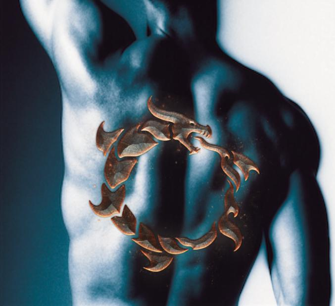

The Hunt
 The meeting adjourned. It was decided that the clan would gather weapons and supplies and begin hunting for the men who had attacked Alick and Angus the night before. They planned to head out within the hour. Uncle William looked to his eldest two sons. Andrew and Jacob were twins. At the age of 18, the two looked just like their father. “Andrew, I need ye tae ready the horses.” Andrew gave his father a nod. “Angus, help Andrew with the horses.” “Ay, Uncle”, said Angus looking toward Andrew. Andrew rolled his eyes at Angus. “Jacob, git tha dogs ready. Make sure they haed water.” Uncle William had two very large black mastiffs. They were his huntin’ dogs that doubled as guard dogs. “Ay”, said Jacob. “And last, William, gather our weapons.” William II was Uncle WIlliam’s third child. He was the same age as Angus, though he looked to be much older, that is until last night. “Everyone meet oot at the stables whan done.” said Uncle William. Alick spoke up. “Whit aboot me?”, asked Alick. Uncle William looked down at Alick and tousled his unruly hair. “Not this time, son. I need ye tae stay here and leuk after the castle.” Alick looked crestfallen; his happy, plump freckled face turning pouty. “Stay an keep yer mum company”, Uncle William continued, giving Alick a pat on the back. Their mother, Aunt Innis, was a tall, frail woman with long auburn hair and green eyes. She didn’t leave her room often as she had a weak heart and spent most days in bed. “Go with yer sister now.” Uncle William’s only daughter, Fiona, was two years younger than Angus. She looked more like her mother than the boys did, which was a good thing. Angus couldn’t imagine Fiona looking burly, stout, and hairy. Fiona was slender and tall with long, wavy copper hair and green eyes. There had already been suitors coming to call for Fiona, but Uncle wasn’t hearing of it. So far, there wasn’t a man in all of Scotland good enough for his Fiona.